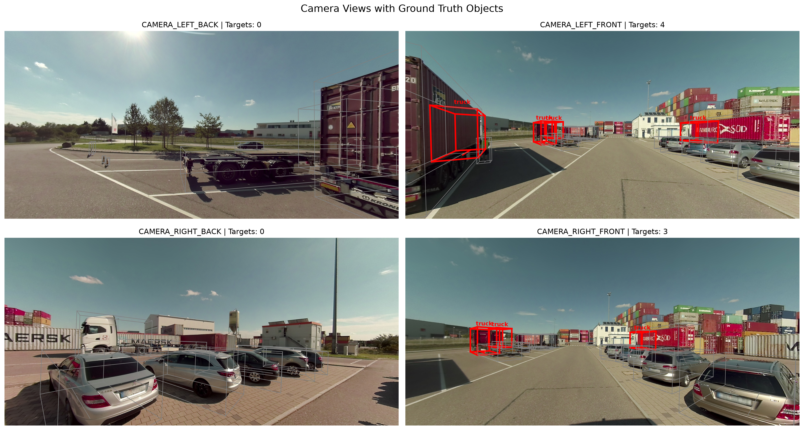
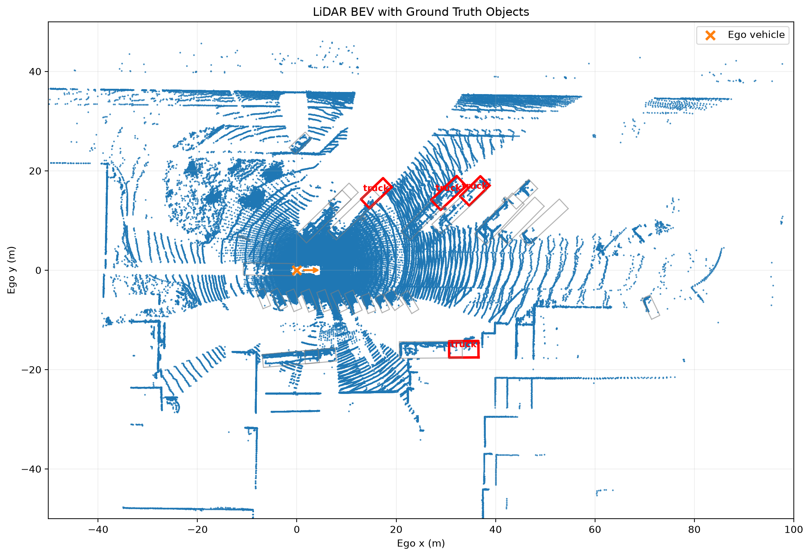
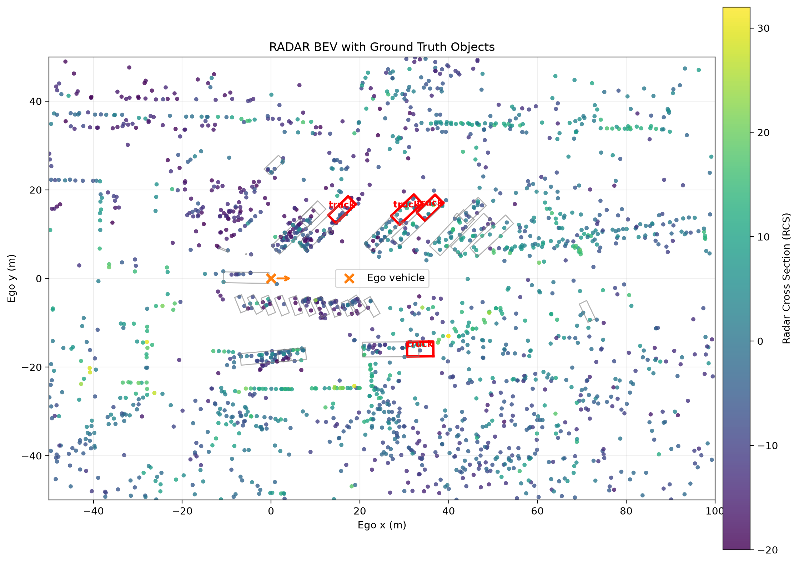
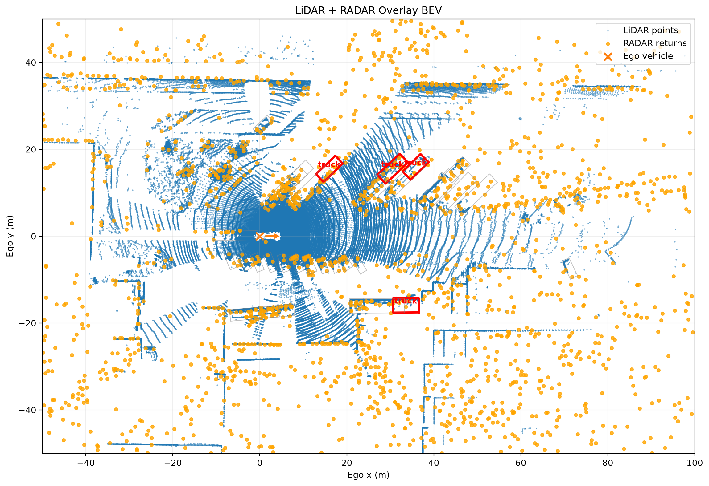

4D RADAR vs LiDAR Benchmark
Interactive TruckScenes v1.2-mini sensor comparison prototype
Camera
See the driving scene from the vehicle's perspective, with ground-truth objects highlighted across the available camera views.
Camera + Ground Truth

LiDAR
Explore dense 3D geometry and bird's-eye spatial structure captured by LiDAR around the ego vehicle.
Interactive 3D Point Cloud
Bird's-Eye View

4D RADAR
Explore sparse RADAR returns in 3D and bird's-eye view, revealing a complementary sensing perspective to LiDAR.
Interactive 3D Point Cloud
Bird's-Eye View

LiDAR + RADAR Combined View
See both sensing modalities in the same coordinate space, making differences in spatial coverage, point density and sensing characteristics immediately visible.
Interactive Combined 3D Point Cloud
Combined Bird's-Eye View

Selected Object Information
Inspect the selected object's sensing information across Camera, LiDAR and 4D RADAR from the same TruckScenes sample.
Object Type Truck
Distance 22.26 m
Visibility 4
LiDAR Points 877
RADAR Returns 6
Camera Views 1
Sensor Comparison
One driving scene, multiple sensing perspectives — revealing how Camera, LiDAR and 4D RADAR represent the same environment in fundamentally different ways.
Motion Information
Compare how directly each sensor contributes information about object movement and dynamic behaviour.
Spatial Information
Compare point density, 3D geometry and spatial coverage across LiDAR and RADAR.
Visual Information
Connect sensor measurements with the visual driving context captured by the vehicle cameras.